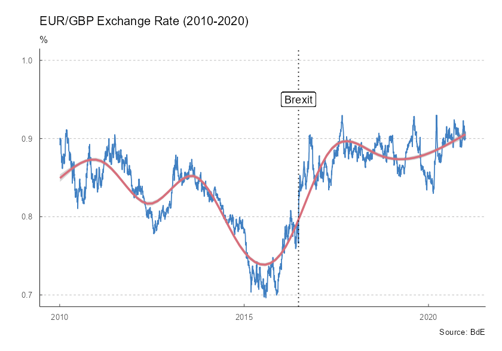

tidyBdE is an API package that helps to retrieve data from Banco de España. The data is provided as tibble and the package tries to guess the format of every time-series (dates, characters and numbers).
Search series
Banco de España (BdE) provides several time-series, either produced by the institution itself or compiled for another sources, as Eurostat or INE.
The basic entry point for searching time-series are the catalogs (indexes) of information. You can search any series by name:
library(tidyBdE)
library(ggplot2)
library(dplyr)
library(tidyr)
# Search GBP on "TC" (exchange rate) catalog
XR_GBP <- bde_catalog_search("GBP", catalog = "TC")
XR_GBP %>%
select(Numero_secuencial, Descripcion_de_la_serie) %>%
# To table on document
knitr::kable()| Numero_secuencial | Descripcion_de_la_serie |
|---|---|
| 573214 | Tipo de cambio. Libras esterlinas por euro (GBP/EUR).Datos diarios |
Note that BdE files are only provided in Spanish, for the time being, the organism is working on the English version. By now, search terms should be provided in Spanish in order to get search results.
After we have found our series, we can load the series for the
GBP/EUR exchange rate using the sequential number reference
(Numero_Secuencial) as:
Plot series
The package also provides a custom ggplot2 theme based
on the publications of BdE:
ggplot(time_series, aes(x = Date, y = EUR_GBP_XR)) +
geom_line(colour = bde_vivid_pal()(1)) +
geom_smooth(method = "gam", colour = bde_vivid_pal()(2)[2]) +
labs(
title = "EUR/GBP Exchange Rate (2010-2020)",
subtitle = "%",
caption = "Source: BdE"
) +
geom_vline(
xintercept = as.Date("2016-06-23"),
linetype = "dotted"
) +
geom_label(aes(
x = as.Date("2016-06-23"),
y = .95,
label = "Brexit"
)) +
coord_cartesian(ylim = c(0.7, 1)) +
theme_tidybde()
The package provides also several “shortcut” functions for a selection of the most relevant macroeconomic series, so there is no need to look for them in advance:
# Data in "long" format
plotseries <- bde_ind_gdp_var("GDP YoY", out_format = "long") %>%
bind_rows(
bde_ind_unemployment_rate("Unemployment Rate", out_format = "long")
) %>%
drop_na() %>%
filter(Date >= "2010-01-01" & Date <= "2019-12-31")
ggplot(plotseries, aes(x = Date, y = serie_value)) +
geom_line(aes(color = serie_name), linewidth = 1) +
labs(
title = "Spanish Economic Indicators (2010-2019)",
subtitle = "%",
caption = "Source: BdE"
) +
theme_tidybde() +
scale_color_bde_d(palette = "bde_vivid_pal") # Custom palette on the package
A note on caching
You can use tidyBdE to create your own local repository at a given local directory passing the following option:
options(bde_cache_dir = "./path/to/location")When this option is set, tidyBdE would look for the
cached file on the bde_cache_dir directory and it will load
it, speeding up the process.
It is possible to update the data (i.e. after every monthly or quarterly data release) with the following commands:
bde_catalog_update()
# On most of the functions using the option update_cache = TRUE
bde_series_load("SOME ID", update_cache = TRUE)